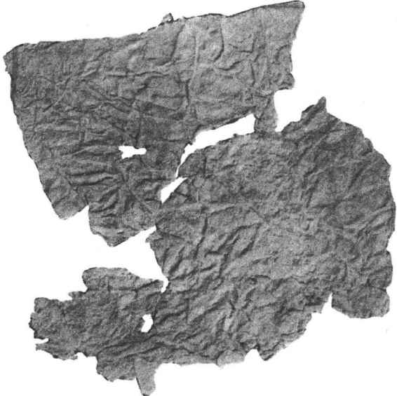
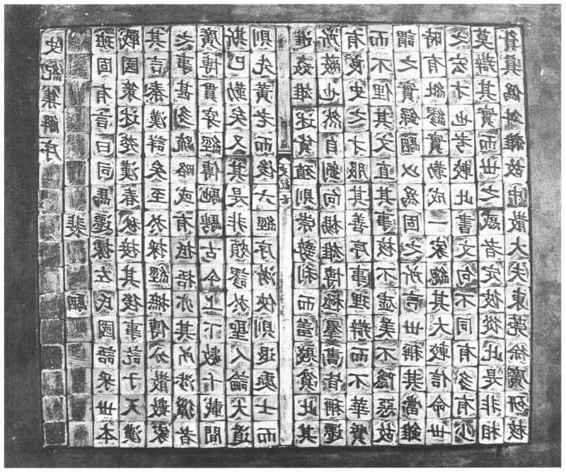
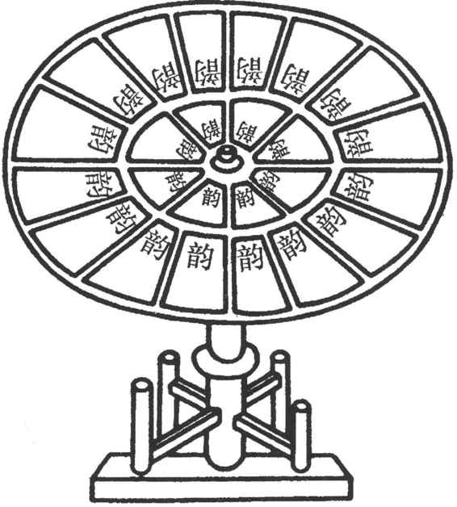

史籍上关于造纸最早的明确文字记载，是《后汉书·蔡伦传》所记载的：“自古书契多编以竹简，其用缣帛者谓之为纸。缣贵而简重，并不便于人。伦乃造意，用树肤、麻头及敝布、鱼网以为纸。元兴元年奏上之，帝善其能，自是莫不从用焉，故天下咸称‘蔡侯纸’。”后人便以此为据，称蔡伦是造纸术的发明者。但自从1933年在新疆罗布淖尔发现西汉麻纸后，蔡伦发明纸的定论便开始受到怀疑。1957年西安灞桥再次发现了西汉麻纸，1973—1974年又在甘肃居延发现西汉麻纸，这些出土实物更加有力地表明，纸是在西汉时发明的，不是蔡伦所首创。尽管还存在着不同的见解，但关于纸是西汉时期发明的观点已越来越受到学术界的承认。（图17—12）

图17-12 甘肃金塔西汉关城出土纸
虽然最初的纸不是蔡伦发明的，但是蔡伦在造纸史上的功绩仍然是极其伟大的。首先，他是造纸技术的伟大改革者。在他之前的纸，质地粗糙，夹带有较多未经松散的纤维束，表面不平滑，不宜书写，大都只供包装用。而蔡伦于元兴元年（105）所献的纸，受到汉和帝的赞赏，“自是莫不从焉”，深受人们的欢迎，说明蔡伦所造的纸已相当精良。要得到优质的纸张，工艺上必然要有所改进，特别是“打浆”工艺要比西汉造麻纸时更为成熟和完善。其次，是他开拓了造纸原料的新领域。蔡伦除了继承和改进用麻类原料（麻头、废旧的麻布和麻织渔网等）造纸外，还首创了用树皮（主要是楮皮）作为造纸的新原料。这是造纸技术上的一项重大的技术革命，既为纸的制造开辟了一个更加广阔的原料来源，又促进了纸的产量和质量的提高。正是由于蔡伦的贡献，为人们提供了廉价优质、适于书写的纸张，从而使纸张的应用得到普及和推广，并引起了书写材料的变革。从此，不仅中国原先所用的竹、木简牍和缣帛之类逐步为纸张所取代，而且埃及的纸草、印度的树叶、以至阿拉伯和欧洲的羊皮等，无不一一在纸的面前相继退出了书写材料的舞台。
自蔡伦以后，中国的造纸业持续地得到发展。人们一方面开拓新的造纸原料，一方面在工艺技术上不断地进行改进，使纸的品质越来越高，品种越来越多样。魏晋南北朝时期已开始利用桑皮、藤皮造纸，隋唐五代时期，竹、檀皮、麦秆、稻秆等也都作为造纸原料，先后被利用。工艺技术方面，魏晋南北朝时期已采用帘床设备捞纸，既提高了工效，又使纸张有了一定的规格，便于运输、保藏、书写和装订。防止纸张虫蠹的“潢治法”，也在这个时期发明并推广。所谓“潢治法”，是用黄檗和雌黄等防虫原料进行处理，以防止纸张被虫蛀蚀。从此，“潢治法”成为古代造纸术中的一项传统工艺。唐时竹纸的问世，是造纸技术的重大突破。竹子纤维硬、脆易断，技术处理比较困难，用竹纤维作原料，表明造纸技术已达到相当成熟的程度。在造纸过程中加矾、加胶、涂粉、洒金、染色等加工技术，也都在唐时问世。至于纸张的品种，从唐代到清代更是不断地增多，各种彩色的蜡笺、冷金、错金、罗纹、泥金银加绘、砑花等名贵的纸张，各种宣纸、麻纸、壁纸、花纸等实用纸张，成为人们文化生活和日常生活中不可或缺的必需品。
廉价优质纸张的大量生产，为印刷术的出现提供了必要的物质条件，而刻印、刻石、木刻符箓以及染织上的镂版印花技术，则早已为印刷术准备了充分的技术条件，因此随着社会文明的发展，印刷术在中国很自然地诞生了。中国古代印刷术的发展，可分为两个阶段，一个是雕版印刷术，一个是活字印刷术。雕版印刷术本书另有专章涉及，这里着重讲一下活字印刷术。
活字印刷术是北宋庆历年间（1041—1048）平民毕昇发明的。《梦溪笔谈》说，他用胶泥刻字，经火烧变硬，按字韵排列分贮于木格中。每一字皆刻有数印，常用字如“之”、“也”等则备有二十几印，以为每板内重复时使用，至于排版时遇到缺字，则随时刻出，烧硬补上。排版时，把泥活字放在一块铁板上。铁板上铺有一层松香、腊和纸灰等混合物以作黏着剂，铁板周围有铁范框住，待字印密布后，将铁板放火上加热，让黏着剂稍熔，再用平板把字面压平，冷却后活字便固定在铁板上，即可刷墨印刷。印完后再行加热，使黏着剂熔化，取下活字。一般铁板设有两块，一块用于印刷，一块用于排字，“更互用之，瞬息可就”，印制数量较多的印刷品“极为神速”。（图17—13）活字印刷工艺简单，使用和保存方便，工效又高，克服了雕版印刷费工费时，用材浪费，工效低，雕版用后保存不便等缺陷，把印刷技术推进到一个新的发展阶段。

图17-13 泥活字排版模型
沈括在记述毕昇的泥活字印刷时，还曾说道：“不以木为之者，木理有疏密，沾水则高下不平，兼与药（指黏着剂）相黏，不可取，不若燔土，用讫再火令药熔，以手拂之，其印自落，殊不沾污。”［25］这一记载表明当时毕昇可能试验过用木活字印刷，但因其所存在的缺陷而未被采用。最先记载用木活字印刷的是元代的王祯。其法是：“造板木作印盔，削竹片为行，雕板木为字，用小细锯锼开，各作一字，用小刀四面修之，比试大小高低一同，然后排字作行，削竹片夹之。盔字既满，用木之，使坚牢，字皆不动，然后用墨刷印之。”［26］王祯对如何刻字、修活字、作印盔、刷印等，都有较详细的记述，较好地解决了木活字印刷工艺中一系列的技术问题。他在公元1298年试用木活字印刷，在不到一个月的时间内，印成了六万多字的《旌德县志》一百部，速度既快，质量又好，开创了木活字印刷的先河。王祯还记述了一种新创的印刷机械“活字板韵轮”（即转轮排字架），这是印刷技术中一项重大的发明。（图17—14）转轮排字架由大木轮、轮轴和轮架构成，使大木轮可在轮轴上转动。大木轮的轮盘上“以圆竹笆铺之，上置活字板面，各依号数上下相次铺摆”［27］。一般用两个转轮排字架，一个置按字韵排列的木活字，一个置杂字板面，字都编成字号，并另造一册。排版时，人坐于两个转轮排字架之间，由另一人按册中的号码唱字，即转动轮盘按号取出所需的字来，进行排版。如遇缺字，则随时刻补。转轮排字架的应用，既提高了排版效率，又减轻了排字工的劳动强度，把活字印刷术提高到一个新的水平。

图17-14 活字板韵轮图
除了泥、木活字外，中国还是最早使用金属活字的国家。元时就以铸锡作字，明以后又相继使用铜、锡活字。
造纸术大约在两晋时期即传至朝鲜和日本，唐时传至印度、波斯和阿拉伯，后又相继传入北非和欧洲。印刷术在唐时传入朝鲜、日本和波斯，后又经波斯传至埃及和欧洲。14世纪末，欧洲出现了木板雕印的纸牌、圣像、经典以及拉丁文文法课本，1456年，德国谷腾堡在欧洲首先用活字印刷“圣经”。可以说，造纸术和印刷术是中国奉献给世界文化的厚礼，它对人类文化的保存和传播、普及和提高产生了不可估量的影响，有力地推动了人类文明发展的进程。